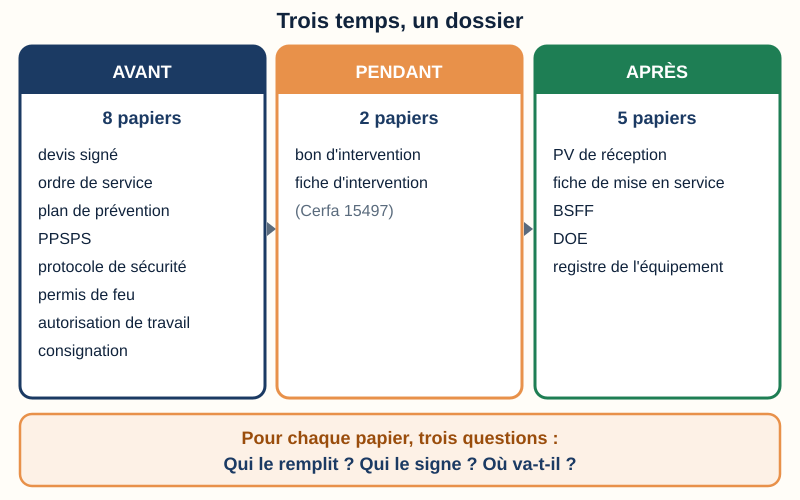
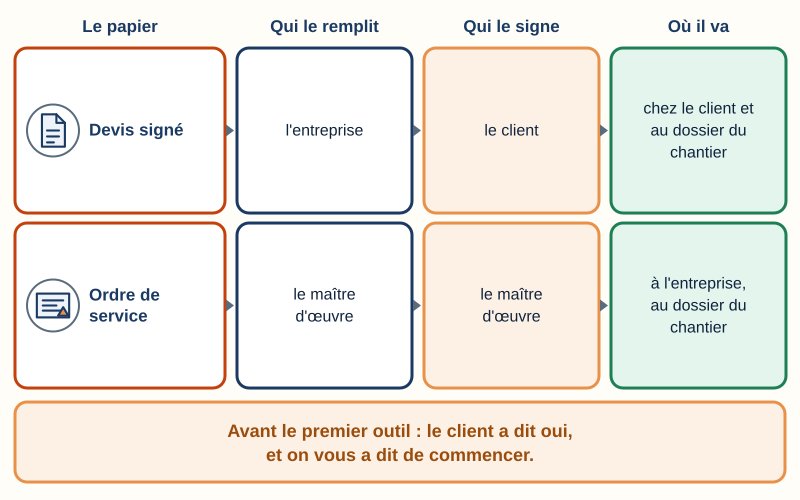
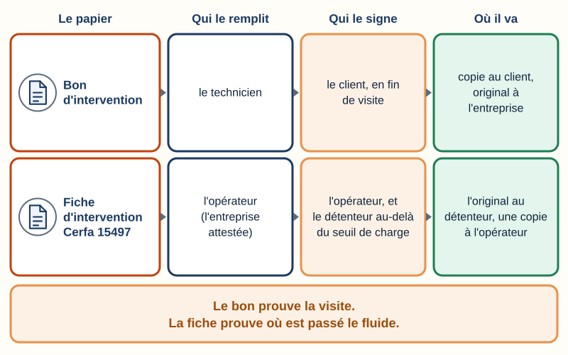
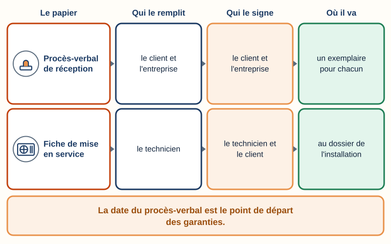
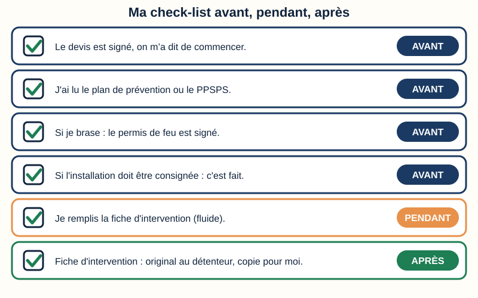
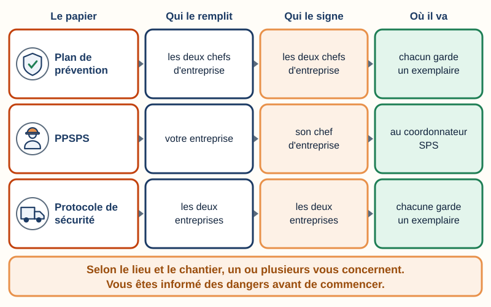
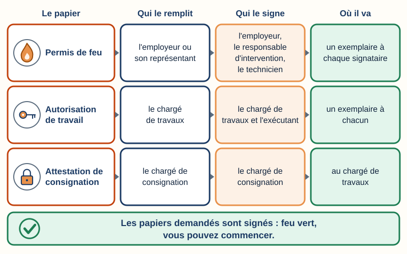

Mini-station commentée · 8 écrans et 4 questions · environ 10 minutes
Objectif
À la fin de la station, vous savez classer les papiers d'un chantier en trois temps — avant, pendant, après — et dire pour chacun qui le remplit, qui le signe, où il va. Vous savez aussi pourquoi on ne touche pas au premier outil tant que les papiers de l'avant ne sont pas signés.
Sert notamment pour
CAP IFCA : savoir S1.2 « Pièces et autorisations administratives » · compétence C2.3 « Préparer les conditions d'intervention sur site »
Bac Pro MFER (2028) : savoirs S1.4 « les procédures administratives » et S1.3 « les étapes d'une intervention » · tâche A1T1 « Prendre connaissance des dossiers relatifs aux opérations à réaliser »
Origine du réseau : TP TECVC, REAC TP-00133 — hors REAC (culture professionnelle du technicien et du chargé d'affaires). Attestation d'aptitude 2025 : codes 1.00 (législation applicable), 4.09 et 5.07 (consigner dans le registre de l'équipement).
Chaque écran peut être expliqué à voix haute : le bouton « Écouter » commente ce que vous voyez. Rien n'est dit qui ne soit aussi écrit.
1 / 12
Écran 1 sur 8
Trois temps, un dossier
Un chantier ne se fait pas qu'avec des outils. Il se fait aussi avec des papiers. Une pièce, c'est un papier ou un document du dossier du chantier. Une autorisation, c'est un papier qui vous donne le droit de commencer un travail.
Avant : le contrat, la sécurité du site, les autorisations.
Pendant : la preuve de la visite et la trace du fluide.
Après : la réception, la mise en service, les dossiers à garder.
Pour chaque papier, posez trois questions : Qui le remplit ? Qui le signe ? Où va-t-il ?
La règle d'or : avant le premier outil, les papiers de l'avant sont signés.

Avant, pendant, après : un papier par moment important.
Écran 2 sur 8
Avant (1) : le contrat — devis signé, ordre de service
Le devis signé
Le devis est l'offre de prix de votre entreprise. Quand le client le signe, c'est son accord sur les travaux et sur le prix. Une attestation d'assurance est jointe au devis (article L. 243-2 du Code des assurances ; station « Les garanties »).
Qui le remplit
l'entreprise
Qui le signe
le client
Où il va
chez le client et au dossier du chantier
L'ordre de service
C'est l'écrit qui dit à l'entreprise de commencer, ou de changer quelque chose. Il vient de celui qui dirige les travaux : le maître d'œuvre (voir « Qui intervient sur une installation frigorifique ? »).
Pas d'ordre de service reçu : demandez-le à votre responsable avant de commencer.
Qui le remplit
le maître d'œuvre
Qui le signe
le maître d'œuvre
Où il va
à l'entreprise, au dossier du chantier

Lisez de gauche à droite : le papier, qui le remplit, qui le signe, où il va.
Écran 3 sur 8
Avant (2) : la sécurité du site
Le plan de prévention
Quand votre entreprise travaille dans les locaux d'une autre, les deux chefs d'entreprise font ensemble une analyse des risques, après avoir visité les lieux (art. R. 4512-6). Le plan est écrit si les travaux durent 400 heures ou plus sur 12 mois, ou s'ils figurent sur la liste des travaux dangereux (art. R. 4512-7). Il fixe les phases dangereuses, les consignes et les secours (art. R. 4512-8).
Avant de commencer, votre chef d'entreprise vous informe des dangers, des zones dangereuses et des accès (art. R. 4512-15).
Qui le remplit
les deux chefs d'entreprise
Qui le signe
les deux chefs d'entreprise
Où il va
chacun garde un exemplaire
Le PPSPS
Sur un chantier de bâtiment où un coordonnateur SPS est désigné, l'entreprise qui y est soumise écrit son plan particulier de sécurité et de protection de la santé. Il ne parle que de son activité : ses risques et ses mesures. Il est remis au coordonnateur.
Le coordonnateur, lui, écrit le plan général de coordination (PGC) : voir « Qui intervient sur une installation frigorifique ? ».
Qui le remplit
votre entreprise
Qui le signe
son chef d'entreprise
Où il va
au coordonnateur SPS
Le protocole de sécurité
Pour un chargement ou un déchargement (une livraison de matériel, par exemple), un écrit appelé protocole de sécurité remplace le plan de prévention (art. R. 4515-4). Il rassemble les informations utiles pour évaluer les risques de l'opération (art. R. 4515-5).
Qui le remplit
les deux entreprises
Qui le signe
les deux entreprises
Où il va
chacune garde un exemplaire
Le document de l'employeur sur ses propres risques est un autre papier : le DUERP (station « Le DUERP »).
Selon le lieu et le chantier, un ou plusieurs de ces papiers vous concernent.
Écran 4 sur 8
Avant (3) : les autorisations
Le permis de feu
Obligatoire avant tout travail par point chaud : brasage, soudage, meulage (INRS, brochure ED 6030). Il est établi par l'employeur ou son représentant. Il est signé par l'employeur, par le responsable d'intervention de l'entreprise qui fait les travaux et par le technicien qui brase : trois signatures dans un petit restaurant (INRS ; modèle du CDG 45). Voir la station « Le permis de feu ».
Qui le remplit
l'employeur ou son représentant
Qui le signe
l'employeur, le responsable d'intervention, le technicien
Où il va
un exemplaire à chaque signataire
L'autorisation de travail
L'ordre écrit qui autorise l'opération. Un modèle d'autorisation demande la nature des travaux, l'entreprise, les dates, l'état de l'équipement (consigné ou non) et les équipements de protection à utiliser.
Qui le remplit
le chargé de travaux
Qui le signe
le chargé de travaux et l'exécutant
Où il va
un exemplaire à chacun
La consignation
Consigner, c'est mettre l'installation en sécurité avant d'y travailler : on la sépare de ses sources d'énergie, on la condamne, on vérifie qu'elle est hors tension. Le chargé de consignation remet une attestation de consignation au chargé de travaux. À la fin, l'avis de fin de travail revient au chargé de consignation (station « Consigner »).
Qui le remplit
le chargé de consignation
Qui le signe
le chargé de consignation
Où il va
au chargé de travaux
Une barrière par papier : la bande verte arrive en dernier.
Écran 5 sur 8
Pendant : le bon et la fiche d’intervention
Le bon d'intervention
La feuille de la visite : la date, le lieu, les travaux faits, le temps passé. En fin de visite, le client la signe : c'est la preuve que vous êtes venu et de ce que vous avez fait.
Qui le remplit
le technicien
Qui le signe
le client, en fin de visite
Où il va
copie au client, original à l'entreprise
La fiche d'intervention (Cerfa 15497)
Pour chaque opération qui manipule du fluide frigorigène, l'opérateur (le mot du Code de l'environnement pour l'entreprise attestée qui intervient, dont vous faites partie) établit une fiche (art. R. 543-82). Au-delà d'un seuil de charge (chiffré sous la carte), l'opérateur et le détenteur la signent ; le détenteur garde l'original ; chacun garde un exemplaire au moins cinq ans.
Seuil de charge : 5 tonnes équivalent CO₂ de HFC (hydrofluorocarbures) ou de PFC (perfluorocarbures), ou 3 kg de HCFC (hydrochlorofluorocarbures). Tonne équivalent CO₂ : la masse de fluide multipliée par son potentiel de réchauffement planétaire (PRP), qui mesure son effet de serre. Voir la station « PRP & ODP ». Détails : station « Traçabilité ».
Qui le remplit
l'opérateur (l'entreprise attestée)
Qui le signe
l'opérateur, et le détenteur au-delà du seuil de charge
Où il va
l'original au détenteur, une copie à l'opérateur

Le bon prouve la visite. La fiche prouve où est passé le fluide.
Écran 6 sur 8
Après (1) : la réception et la mise en service
Le procès-verbal de réception
La réception est l'acte par lequel le client déclare accepter l'ouvrage, avec ou sans réserves (ce qui reste à reprendre) (art. 1792-6 du Code civil). Elle est faite en présence des deux parties. Sa date est le point de départ des garanties (station « Les garanties »).
Qui le remplit
le client et l'entreprise
Qui le signe
le client et l'entreprise
Où il va
un exemplaire pour chacun
La fiche de mise en service
À la mise en service, vous relevez les valeurs de fonctionnement (pressions, températures, intensités) et vos réglages, et vous les écrivez. Elle prouve que l'installation a été contrôlée en marche.
Qui le remplit
le technicien
Qui le signe
le technicien et le client
Où il va
au dossier de l'installation

La date du procès-verbal part les garanties.
Écran 7 sur 8
Après (2) : le BSFF, le DOE et le registre
Le BSFF
Un fluide récupéré qui ne sera pas réutilisé devient un déchet. Il part avec un bordereau de suivi (BSFF), rempli dans Trackdéchets. L'émetteur, le transporteur et l'installation de destination le signent par voie électronique (arrêté du 26 juillet 2022). Détails : station « Traçabilité ».
Qui le remplit
l'émetteur du fluide récupéré
Qui le signe
l'émetteur, le transporteur, la destination
Où il va
dans Trackdéchets
Le DOE
Le dossier des ouvrages exécutés est remis par l'entreprise au maître d'ouvrage après la réception. Il garde l'histoire technique de l'installation : on s'en sert pour la faire fonctionner, l'entretenir, la modifier.
Qui le remplit
l'entreprise
Qui le signe
selon le marché
Où il va
au maître d'ouvrage
Le registre de l'équipement
La mémoire de la machine : fluide chargé, contrôles d'étanchéité, fuites, fluide ajouté ou récupéré. Il est tenu par l'exploitant (règlement F-Gaz III). Vos codes d'attestation : 4.09 et 5.07.
Qui le remplit
l'exploitant, avec vos données
Qui le signe
pas de signature type
Où il va
avec la machine, tenu à jour
Trois dossiers : le déchet, l’ouvrage, la machine.
Écran 8 sur 8
Bilan : ma check-list
Le réflexe : trois questions pour chaque papier — Qui le remplit ? Qui le signe ? Où va-t-il ?
Avant
Devis signé remplit : l'entreprise · signe : le client · va : chez le client et au dossier du chantier
Ordre de service remplit : le maître d'œuvre · signe : le maître d'œuvre · va : à l'entreprise, au dossier du chantier
Plan de prévention remplit : les deux chefs d'entreprise · signe : les deux chefs d'entreprise · va : chacun garde un exemplaire
PPSPS remplit : votre entreprise · signe : son chef d'entreprise · va : au coordonnateur SPS
Protocole de sécurité remplit : les deux entreprises · signe : les deux entreprises · va : chacune garde un exemplaire
Permis de feu remplit : l'employeur ou son représentant · signe : l'employeur, le responsable d'intervention, le technicien · va : un exemplaire à chaque signataire
Autorisation de travail remplit : le chargé de travaux · signe : le chargé de travaux et l'exécutant · va : un exemplaire à chacun
Attestation de consignation remplit : le chargé de consignation · signe : le chargé de consignation · va : au chargé de travaux
Pendant
Bon d'intervention remplit : le technicien · signe : le client, en fin de visite · va : copie au client, original à l'entreprise
Fiche d'intervention Cerfa 15497 remplit : l'opérateur (l'entreprise attestée) · signe : l'opérateur, et le détenteur au-delà du seuil de charge · va : l'original au détenteur, une copie à l'opérateur
Après
Procès-verbal de réception remplit : le client et l'entreprise · signe : le client et l'entreprise · va : un exemplaire pour chacun
Fiche de mise en service remplit : le technicien · signe : le technicien et le client · va : au dossier de l'installation
BSFF (bordereau) remplit : l'émetteur du fluide récupéré · signe : l'émetteur, le transporteur, la destination · va : dans Trackdéchets
DOE (dossier des ouvrages exécutés) remplit : l'entreprise · signe : selon le marché · va : au maître d'ouvrage
Registre de l'équipement remplit : l'exploitant, avec vos données · signe : pas de signature type · va : avec la machine, tenu à jour

Six gestes pour ne jamais commencer sans papiers.
Question 1 sur 4
Votre entreprise travaille 400 heures sur 12 mois dans un restaurant qui reste ouvert. Quel écrit faut-il avant de commencer ?

Rappel de l'écran 3 — selon le lieu et le chantier, un papier de sécurité s’impose.
Question 2 sur 4
Vous allez braser un tube de cuivre chez un client. Quel papier faut-il avant de sortir le chalumeau ?

Rappel de l'écran 4 — trois barrières, une bande verte.
Question 3 sur 4
Quand faut-il remplir une fiche d'intervention Cerfa 15497 ?
Rappel de l'écran 5 — le bon prouve la visite, la fiche prouve le fluide.
Question 4 sur 4
Quel papier donne la date de départ des garanties ?
Rappel de l'écran 6 — la date du procès-verbal part les garanties.
![Tableau à quatre colonnes : le papier, qui le remplit, qui le signe, où il va. Plan de prévention : rempli par les deux chefs d'entreprise, signé par les deux chefs d'entreprise, va chacun garde un exemplaire. PPSPS : rempli par votre entreprise, signé par son chef d'entreprise, va au coordonnateur SPS. Protocole de sécurité : rempli par les deux entreprises, signé par les deux entreprises, va chacune garde un exemplaire. Une bande rappelle : selon le lieu et le chantier, un ou plusieurs de ces papiers vous concernent ; vous êtes informé des dangers avant de commencer.](svg/securite-du-site.svg)
![Tableau à quatre colonnes : le papier, qui le remplit, qui le signe, où il va. Permis de feu : rempli par l'employeur ou son représentant, signé par l'employeur, le responsable d'intervention, le technicien, va un exemplaire à chaque signataire. Autorisation de travail : rempli par le chargé de travaux, signé par le chargé de travaux et l'exécutant, va un exemplaire à chacun. Attestation de consignation : rempli par le chargé de consignation, signé par le chargé de consignation, va au chargé de travaux. Une bande verte cochée : les papiers demandés sont signés, feu vert, vous pouvez commencer.](svg/autorisations.svg)
![Tableau à quatre colonnes : le papier, qui le remplit, qui le signe, où il va. BSFF (bordereau) : rempli par l'émetteur du fluide récupéré, signé par l'émetteur, le transporteur, la destination, va dans Trackdéchets. DOE (dossier des ouvrages exécutés) : rempli par l'entreprise, signé par selon le marché, va au maître d'ouvrage. Registre de l'équipement : rempli par l'exploitant, avec vos données, signé par pas de signature type, va avec la machine, tenu à jour. Une bande rappelle : trois dossiers, le déchet, l'ouvrage, la machine.](svg/bsff-doe-registre.svg)